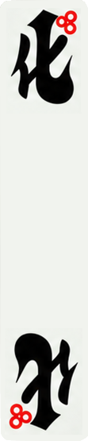
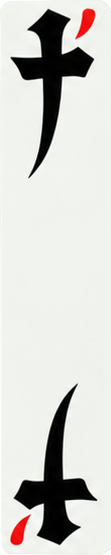
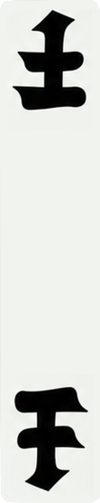
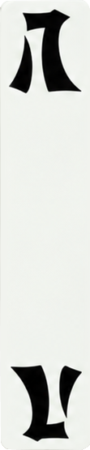
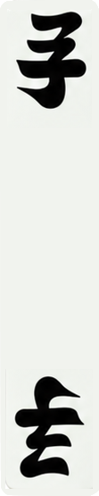
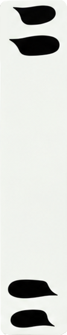
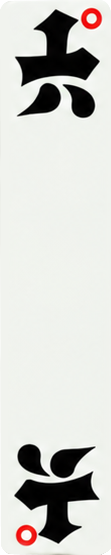

PLAY / 02
组成一句
先看懂三种最常见的组合：口诀三字句、连续数字句，以及三张相同的坎。
01
固定的三字句
花牌里的“句”并非随意拼接，而是从传统启蒙读物的文字顺序中来。 一副牌的口诀，按三个字一组排开，正好成为可组合的牌句。
六组口诀句是“上大人、孔乙己、化三千、七十土、八九子、可知礼”。其中“上大人”和“可知礼” 各算 1 胡；其余句子的胡数，要看其中有没有精牌或带花边的黑牌。
化三千


可知礼
孔乙己

七十土



八九子



02
连续的数字牌
数字牌也能成句：从“乙二三”开始，只要三个数字顺序相连，就能组成一句。 例如“二三四”“三四五”“五六七”“七八九”“八九十”。
这里的“乙”在数字句中相当于“一”。带花边的乙、三、五、七、九在算胡时另有价值， 但组成数字句时，仍按它们本来的数字顺序来认。
乙二三

二三四
五六七


八九十
03
三张相同牌
除了固定句和连续数字，三张一样的牌也可以看作一组。这个规则对初学者很直观： 如果手里有三张同字牌，它们天然能形成一组，不需要再去找前后关系。
三张都由自己摸到，叫“坎”；先有一对、再接到别人打出的同字牌，叫“对”。 二、四、六、八若在手中成坎，算 1 胡；若只是对出，则不算胡。
三张“上”
04
别杠：只代花三、花五、花七
“别杠”是特殊牌，作用接近麻将里的赖子，但它并不能代替所有牌。
它只可以当作带花边的三、五、七来使用，也就是“花三、花五、花七”。因此可以用在含这些精牌的句子或坎里，例如“化别千”“别十土”。
别杠